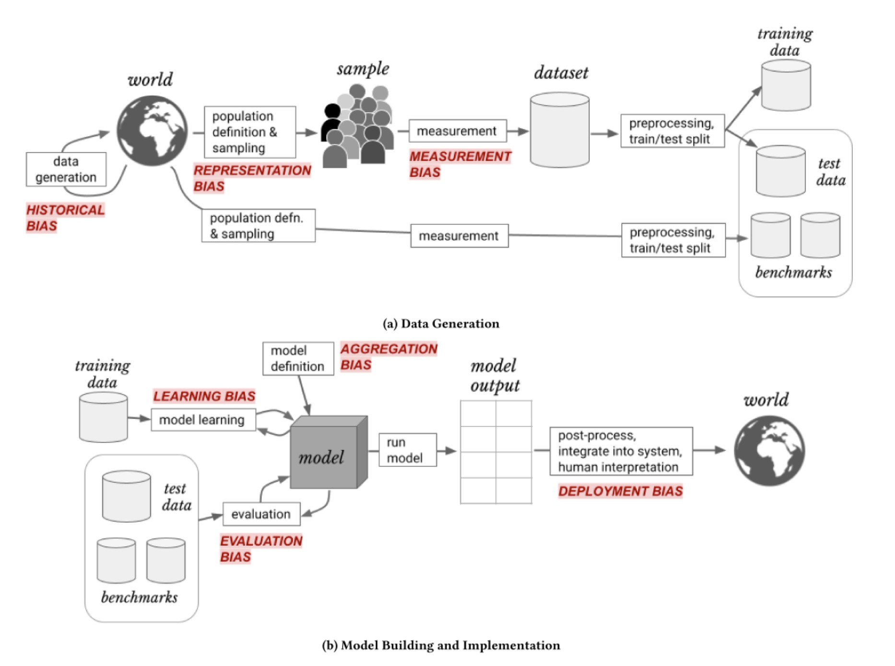
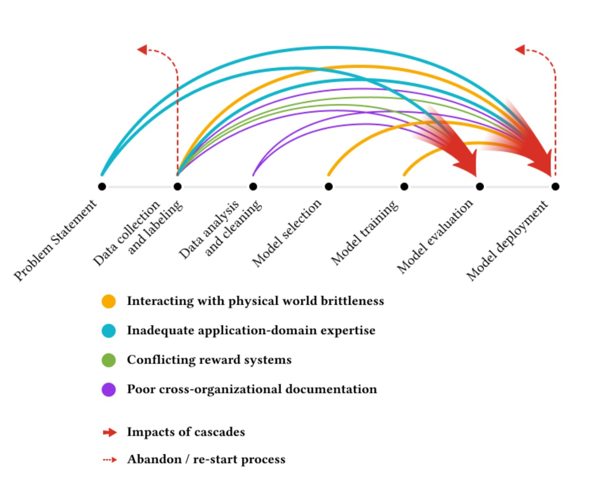

AI is being used to tackle high-impact scientific problems, including searching for new antibiotics to combat antibiotic-resistance and predicting what foreign substances the immune system can recognize as invaders. Amidst the excitement, it is important to keep in mind the gaps and risks of how AI is applied in science. Recognizing these risks opens up new opportunities and can prevent us from being caught off guard by shortcomings.
Missing Data
A recurring problem within data science is that often the data we would be most interested in does not exist or is too difficult to gather. In response, data scientists often instead use imperfect proxies (Thomas and Uminsky 2022), or alter their research questions to make use of the data they have (Passi and Barocas 2019)). While it is understandable for teams to work with what data is available, this can unduly influence the field to neglect areas where data is unavailable or more difficult to collect.
A research project titled “The library of missing data” (Mimi Onouha 2016) inspected examples of datasets that are not collected and of information that we don’t have. What is not measured or recorded can be very revealing, yet it is harder to see an absence. It would be a valuable project to begin with the most important and high-impact open questions in various scientific fields, and then to determine which types of data would need to be collected, what experiments need to be run, and whether AI could prove useful.
While it is understandable that physical and financial constraints shape what types of data can be gathered, it is important to stay aware of how these influence research questions and findings. In some cases, a research area may be ignored due to lack of data. In other cases, results may be biased due to only cetain types of data being included. Missing data can be a type of representation bias, in which not all groups are adequately represented (Suresh and Guttag 2021). For example, databases of T cell receptors are highly biased towards particular genetic alleles and certain viral antigens. This data can still help us reach valuable conclusions, but it would be a mistake to overgeneralize those findings to alleles or antigen types that are not well-represented in the underlying data.

The physical world is complex and volatile
In other fields, machine learning models have sometimes performed well in testing but failed to work as expected when deployed in the real world (Sambasivan et al. 2021). Issues can arise when the context and quality of the training data is not fully understood (Gebru et al. 2021). Biases and errors in datasets will propagate to downstream research. For example, The ImageNet Large Scale Visual Recognition Challenge (ILSVRC) dataset, often called ImageNet-1k, is widely used in image recognition research and has been cited 32,000 times. Over a quarter of the images in the dataset are of wild animals, yet researchers later found that over 12% of these wild animals are labeled incorrectly (Luccioni and Rolnick 2023).
ML systems are trained in clearly defined environments, while the physical world often has complex and volatile underlying phenomena, which are not fully accounted for during training. This can create a brittleness to ML-generated solutions (Sambasivan et al. 2021).
Neglecting Mechanistic Understanding
Language models are great at interpolating between underlying information, but not at creating things that are completely new (Dziri et al. 2023). Brand new theories will still require human ingenuity. Upon receiving the Nobel Prize, biologist Sydney Brenner, warned that increased data does not necessarily lead to deeper understanding, saying “We’re drowning in an ocean, or a sea of data but we are starved of knowledge.” (Sylwan 2002). Geneticist Paul Nurse, another Nobel Prize-winner, echoed these concerns. He wrote about the need for a renewed emphasis on new ideas and theory, alongside data. Nurse proposed that computer scientists need to be embedded alongside biologists to deeply understand the domain problems, “It is through deep familiarity with the biology — not simply a drive to collect more and more data — that important questions will be asked.” (Nurse 2021).
AI is a powerful tool, but it does not replace other ways of knowing about the world, including qualitative research and benchtop quantitative experiments. Machine learning and AI techniques are great at learning patterns in existing data.
Difficulty of Cross-Disciplinary Work
Interdisciplinary work is challenging, as it can be tough to remain on the cutting edge of two separate fields. At one extreme, you can have research based on sound immunology, but using deep learning techniques which are outdated or perhaps were never considered best practice. At the other extreme, you can have research using state-of-the-art deep learning, yet misunderstanding the core mechanisms of immunology or misconstruing the underlying context of datasets.
Meaningful collaboration between those with in-depth immunology knowledge and those with in-depth deep learning knowledge is necessary. Cross-disciplinary work is inherently difficult. Challenges can include differences of communication and work practices between practitioners with different backgrounds; insufficient expertise in one of the fields; and the difficulty of reconciling different approaches and priorities. Moreover, many academic institutions, journals, and other research centers often tend to value specific types of expertise over others. Deep learning and areas of the life sciences such as immunology are each highly complex, jargon-laden, and fast-moving fields. Finding researchers, or even teams, which can keep pace with both is challenging.
Deep learning practitioners often seek to automate systems without understanding what the greatest needs of domain experts are. When this automation leaves gaps, humans are often expected to fill these gaps in ways that are difficult, tedious, or impractical. In contrast, a more fruitful approach may be to take the strengths of both domain experts and deep learning into account from the start to leverage human strengths (Thomas 2019).
The Double-Edged Sword of Competitions
Carefully structured competitions can play a valuable role in motivating research. Well-defined benchmarks make it clear how various approaches compare to one another. The winner of the 2012 ImageNet competition to identify objects in photographs, an algorithm called AlexNet, led to the mainstream popularization of neural networks and set off an avalanche of increased research into AI. The winner of the 2020 CASP challenge to take amino acid sequences as input and output the most likely 3D protein structure was a computer program called AlphaFold, which has revolutionized protein structure prediction. While these have been huge breakthroughs for their respective fields, over-focusing on competitions can lead to other research areas being neglected. In other cases, the models created for benchmark tasks may be inappropriately applied to other tasks for which they are less suited (Paullada et al. 2021).
It takes effort to construct well-structured competitions. Data must be gathered and selected, often through benchtop laboratory experiments, while being cognizant of biases and overall representation within the dataset. It is also crucial to have appropriate splits between the training set and a held-out test set. When data leakage occurs, clues from the test set can be found in the training set, artificially inflating the performance of models (Samala et al. 2020).
Undervaluing data work
Too often the arduous task of curating quality datasets has been neglected, undervalued, and not given the same currency for career advancement as algorithmic work (Jo and Gebru 2020). A research paper which interviewed over 60 machine learning practitioners was titled “Everyone wants to do the model work, not the data work”, drawing on a representative quote from one of the interviewees. The researchers found that data work was systematically devalued, leading to issues which impacted model performance, sometimes with disastrous consequences (Sambasivan et al. 2021)).

Many areas within science lack consistent benchmark datasets. This can result in models that are not consistently reproducible and makes it tough to compare performance across different papers. Organizers of the largest academic AI conference, Neural Information Processing Systems (NeurIPS), recognized that there were too few incentives for researchers to work on datasets and benchmarks. In 2021, they opened a new track of the conference, on equal standing with the original track, to better support and incentivize research on datasets and benchmarks (Vanschoren and Yeung 2021). This is an encouraging model, and I hope to see more efforts to prioritize data curation.
Opportunities for AI in Science
The flip side of these risks and gaps is that they offer opportunities for how we can work to improve the application of AI to science and to aim to avoid potential pitfalls. To ensure that we are making the most of AI possibilities in the life sciences, it would be a good idea to:
- Embed scientists and AI practitioners on closely integrated teams
- Survey the biggest open problems in immunology and determine whether AI could help, and if so, what data is needed (as opposed to always just starting with the data we already have)
- Reward dataset collection, through conference tracks and journal issues focused on it, similar to the model adopted by NeurIPS
- Invest in research that is:
- Focused on underlying causal mechanisms
- Values multiple ways of generating knowledge
- Gathering new types of data
- Develop benchmark datasets and structured competitions where relevant
By keeping a broader perspective on different types of expertise, different methods of research, and the need for interdisciplinary work, we can prevent a myopic application of AI to science that risks neglecting important questions.
Thank you to Jeremy Howard for feedback on earlier drafts of this post.
You can subscribe to be notified of new blog posts by submitting your email below:
I look forward to reading your responses. Create a free GitHub account to comment below.